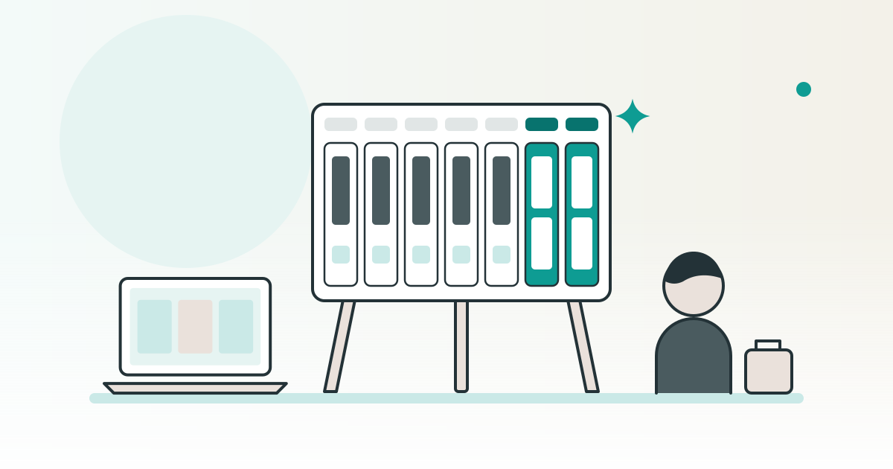

SHOPKIT コラム
週末起業とは？会社員が勤めを続けながら土日で始める小さな事業の選び方

会社を辞めずに自分の事業を始めたい時、まず考えたいのが週末起業という形です。土日に取り組む仕事でも、連絡や納期まで休日だけで済むとは限りません。候補の仕事を作業に分け、平日の勤めと両立できるかを考えます。
この記事は、完成品のネットショップを販売している SHOPKIT が書いています。
週末起業とは、勤めを続けたまま土日を中心に自分の事業を持つこと
この記事でいう週末起業は、会社員として働きながら、休日を主な作業日にして自分の商売を始めることです。会社を設立することだけを指す言葉ではありません。自分で商品や提供する仕事を決め、相手に届ける形も含めて考えます。
副業には、別の勤務先で決められた時間に働く形もあります。週末起業では、何を引き受けるかに加え、受け付ける量、届ける日、連絡の返し方も自分で決めます。休みの日を作業に使えるかだけでなく、約束した内容を続けて届けられるかが選ぶ基準になります。
土日に作業をまとめることと、平日は事業から完全に離れることは分けて考えましょう。週明けに質問が来たり、相手からの確認が必要になったりする仕事もあります。始める前に、平日へ残る仕事を見つけるのがこの記事の出発点です。
平日の夜と土日に分けて、事業の作業を書き出してみる
最初から仕事の名前で候補を絞らず、準備、受付、提供、連絡、記録に分けてみます。同じ仕事でも、予約で受けるか、注文ごとに進めるかで予定の組み方は変わります。自分が作業を始められる時と、相手が返事を必要とする時を、別の欄へ書いてください。
次の表は、土日を中心に始めたい人の記入例です。必要な時間を一律に決めた表ではありません。実際の仕事内容に合わせて、いつ動かすか、平日にも確認が要るかを埋めて使います。
| 分ける作業 | 土日にまとめる候補 | 平日に残るか確かめること |
|---|---|---|
| 準備する | 商品や説明の準備、次の作業の段取り | 準備後に変更の連絡が来た時の扱い |
| 受け付ける | 予約枠や受ける数量を決める | 新しい依頼をいつ確認し、いつ返事するか |
| 届ける | 制作、提供、発送に向けた作業 | 相手の希望日や手配先の予定に合わせられるか |
| 問い合わせに返す | よく聞かれる内容の整理、説明の見直し | 待ってもらえる相談か、早い判断が要る相談か |
| 記録を残す | 売買や支払いの記録を整理する | 後で探せるよう、その都度保管する資料 |
表を埋めたら、平日の欄だけを読んでみます。勤務中の対応が前提になっているなら、受付の方法や期限を変えられないか考えます。変更が難しい仕事は、最初の候補から外す判断もできます。
仕事が入る予定だけで休日を埋めず、休息や家族との予定も先に残します。予定がずれた時に戻せる余白がないと、翌週の勤めへ負担が続きます。空いている時間全体を作業日に数えるより、繰り返して確保できる時間から考えてください。
関連：スキマ時間でできる在宅の副業の選び方｜1日の空き時間から考える
週末起業のアイデアは、平日に手を止めても困らない仕事から選ぶ
候補にしやすいのは、事前に受付の範囲を決められ、相手にも予定を伝えられる仕事です。「休日にできそう」という印象だけで決めず、作業を止めている間に何が起こるかまで見ます。受けた後で日程を変えるより、最初から守れる条件にしておく方が判断しやすくなります。
| 仕事の形の例 | 土日に寄せる工夫 | 選ぶ前の確認 |
|---|---|---|
| 予約を受けて教える | 提供する曜日と枠を先に決める | 平日の予約変更や質問に返せるか |
| 依頼を受けて制作する | 着手する日と納品日を相談して受ける | 確認や修正を求められる時期が勤めと重ならないか |
| 用意した商品を販売する | 商品説明や次の準備をまとめて進める | 注文後の連絡、手配、届ける予定を確認できるか |
| 休日に対面で提供する | 提供日と受付日を区別する | 場所の準備、事前連絡、終了後の片付けも含められるか |
ここで挙げたのは、作業を比べるための例です。実際の事業者の事例や成果を示したものではありません。自分の経験を使える候補でも、平日の対応が合わなければ、提供の仕方から見直します。
たとえば、休日に制作できても、相手が平日に確認してすぐ修正を求めるなら、その返事も仕事の一部です。商品を売る場合も、商品を並べる準備だけで判断せず、注文を受けた後の仕事を数えます。始める作業より、受けた約束を守る段取りを基準にしてください。
勤め先の就業規則と、開業や申告の手続きを始める前に確かめる
仕事の候補が決まったら、勤め先へ伝える内容を具体的にします。何を提供するか、いつ作業するか、連絡が入る時間帯はいつかを整理し、社内の確認先に就業規則や申請の方法を尋ねます。自分で商売をする形だから確認は不要だとは決めず、職場の手順に沿って進めてください。
厚生労働省の「副業・兼業」には、副業に関する指針、就業規則のひな形、届け出の様式例がまとめられています。公的なひな形が、そのまま自分の勤め先の規則になるわけではありません。自分に適用される社内の決まりを確認するための入口として使います。
開業の届け出と、確定申告が必要かどうかも分けて確かめます。国税庁の開業に関する手続の案内では、事業所得などが生じる事業を始めた人を対象に、書類の作り方や提出先を示しています。候補の仕事の内容と開始する予定を整理し、対象となる手続と期限を税務署で確かめてください。
国税庁の「給与所得者で確定申告が必要な人」は、給与の受け取り方や、給与以外の所得などで条件を分けています。会社員であることや、土日だけの活動であることだけを理由に、申告の要否を判断しないようにします。売買と支払いの資料を残し、自分の条件を税務署の相談窓口へ伝えられるようにします。
窓口へ相談する予定も、土日の作業とは別に考えます。訪問や相談をする方法、受付の日程を先に調べておくと、始める直前に準備が止まるのを避けやすくなります。ネットショップに絞った手続きや勤めとの両立は、次の記事で扱います。
関連：会社員が副業でネットショップを始めるには｜就業規則・時間・税金
平日に届く連絡と納期への返し方を、先に決めておく
商品や仕事の提供を始める前に、返事をする時、受ける依頼の範囲、納期が変わる時の連絡を決めます。休日中心で進めることは、相手にも分かる形にします。すぐ返せない相談が来ても、その都度約束を広げず、あらかじめ伝えた条件に戻って判断できるようにします。
| 決めておくこと | 相手へ伝える内容 | 自分が確かめること |
|---|---|---|
| 連絡を返す時 | 問い合わせを確認する曜日や時間帯 | 本業や家族の予定と重ならず続けられるか |
| 依頼を受ける範囲 | 引き受ける内容と、対応できない変更 | 受け付けた後の確認や修正まで予定に入るか |
| 届ける予定 | 準備や手配を含めた予定と連絡の方法 | 他の相手の返事を待つ工程がないか |
| 予定が変わる時 | 変更の相談を受ける窓口 | 遅れが分かった時に連絡できるか |
初めは、仕事が入った場合を想定して予定表を埋めてみます。勤めが忙しい週でも、受付から提供後の連絡まで進められるかを見ます。進められない部分があれば、引き受ける量や条件を小さくしてから始める選び方ができます。
途中で続けにくくなった時は、自分の意欲だけを問題にせず、予定のどこで待ちが生じたかを振り返ります。平日の連絡が集中するのか、休日の準備が終わらないのかでは、直す所が違います。始めるまでの順番を組み直したい時は、次の記事を参照してください。
お店づくりの準備を省いて、完成品のネットショップから始める選択肢
商品を販売する形を考えるなら、自分でお店を作る方法と、完成品のお店を購入する方法があります。お店の準備と、販売開始後の仕事を分けて比べます。出来上がったお店を選ぶ場合も、注文や問い合わせに対応する予定は自分の生活に合わせて確認します。
SHOPKITは、完成品のネットショップを購入できるサービスです。デザイン済みのお店、仕入れの情報、販売を進める手順書や集客の手順書が一式に含まれます。商品とお店を準備した形で受け取り、お店づくりの工程を省いて販売を始める選択肢です。
準備を省けることと、販売開始後の作業が休日だけで済むことは別です。自分の予定に合わせ、どの作業を土日にまとめ、どの確認を平日に残すかを見てから選んでください。完成品のお店の中身は、サービスページのお渡しするもので確認できます。
候補を見る時は、気になる商品だけでなく、平日の連絡を受けられるかも一緒に考えます。販売中のお店の一覧を見ながら、先に作った作業表へ当てはめてみてください。
よくある質問
会社員が週末起業を始めるときは、会社を設立する必要がありますか？
この記事の週末起業は、会社の設立に限らず、勤めを続けながら自分の商売を始める形を指します。実際に必要となる手続は、選んだ仕事の内容に合わせて窓口で確かめてください。
平日に連絡を確認できない会社員は、週末起業の仕事をどう選べばよいですか？
土日に作業できるかに加え、平日の依頼変更や質問にいつ返事が要るかを確かめます。返せない時間に対応が求められるなら、受付の条件や提供する形を見直してから選びます。
完成品のネットショップから始めると、会社員の平日の作業もなくなりますか？
お店の準備を省くことと、販売を始めた後の作業は分けて考えます。注文や問い合わせをいつ確認するかを作業表へ入れ、勤めと両立できるかを確かめてください。
SHOPKITのお届けするものについては、2026年10月15日時点のサービスページの記載を参照しています。公的資料は2026年10月30日に確認した内容です。